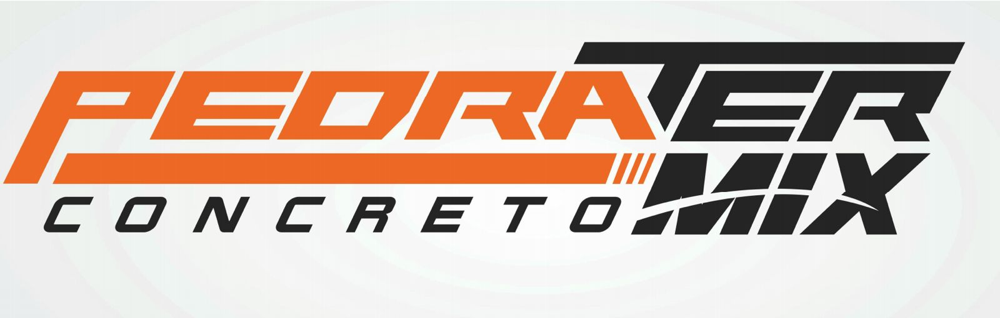
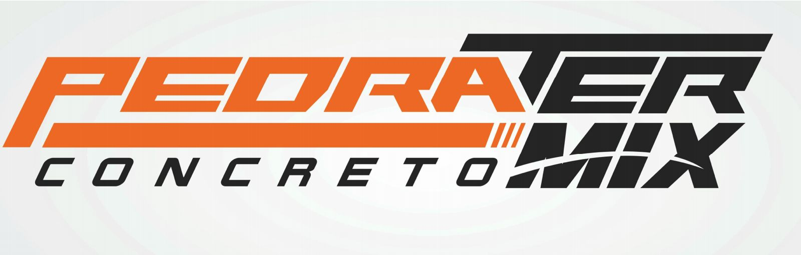

Apresentação
A 1ª Feira da Construção Civil do Unifeso acontecerá nos dias 7 e 8 de novembro de 2025, em formato presencial, na cidade de Teresópolis – RJ. O evento é uma realização dos cursos de Engenharia Civil e Arquitetura e Urbanismo em parceria com o Centro Universitário Serra dos Órgãos (Unifeso).
Esta será a primeira edição da feira, marcada por sua relevância para o setor. O evento promete ser um espaço de integração e troca de conhecimentos, reunindo profissionais da engenharia, arquitetura e construção civil, além de empresas do ramo, estudantes e a comunidade interessada.
O tema central do evento "CONSTRUÇÕES SUSTENTÁVEIS QUE TRANSFORMAM O FUTURO"
Contagem Regressiva
00 dias
00h
00min
00s


 
